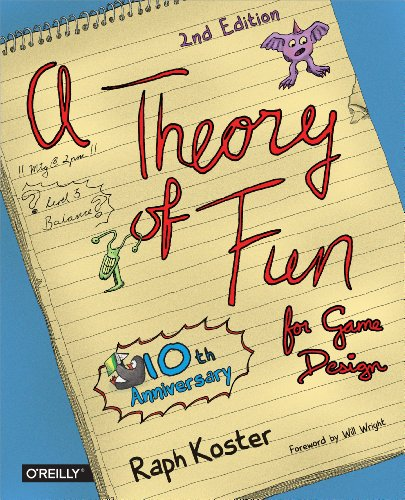
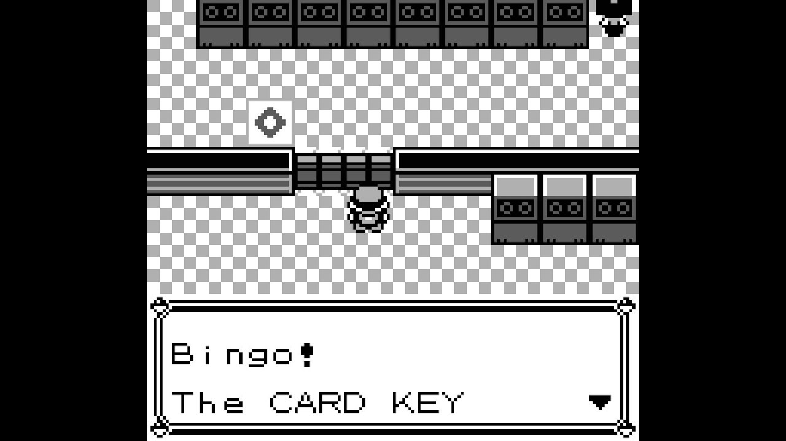
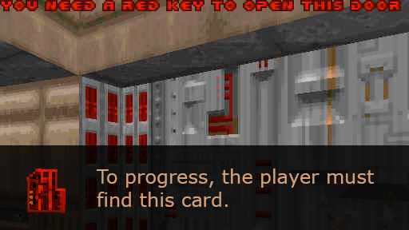
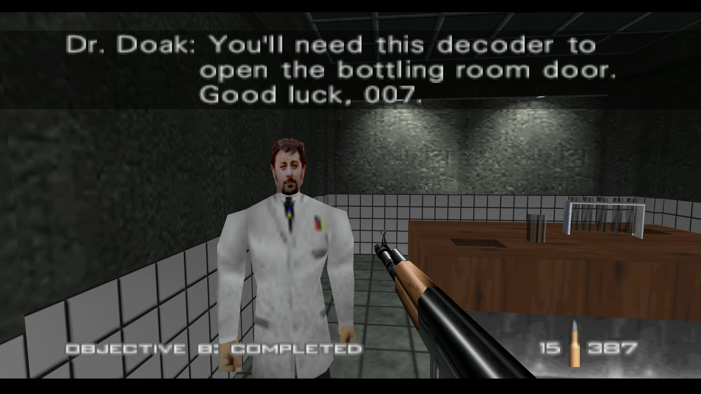
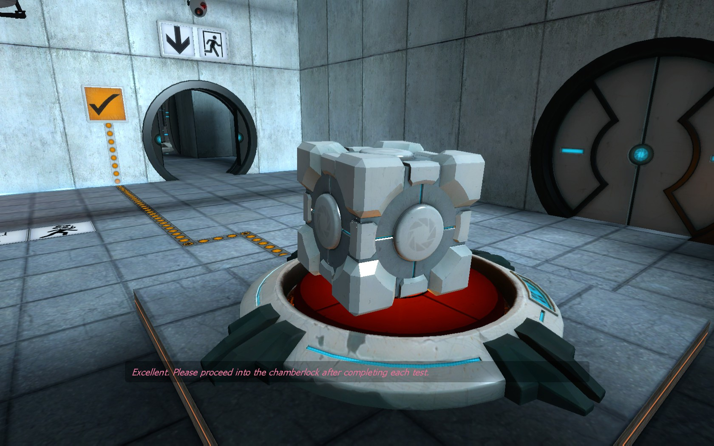
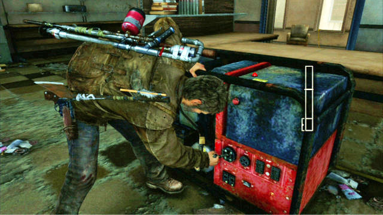
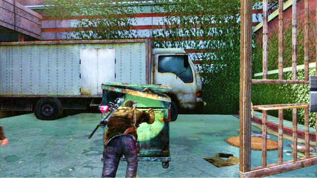
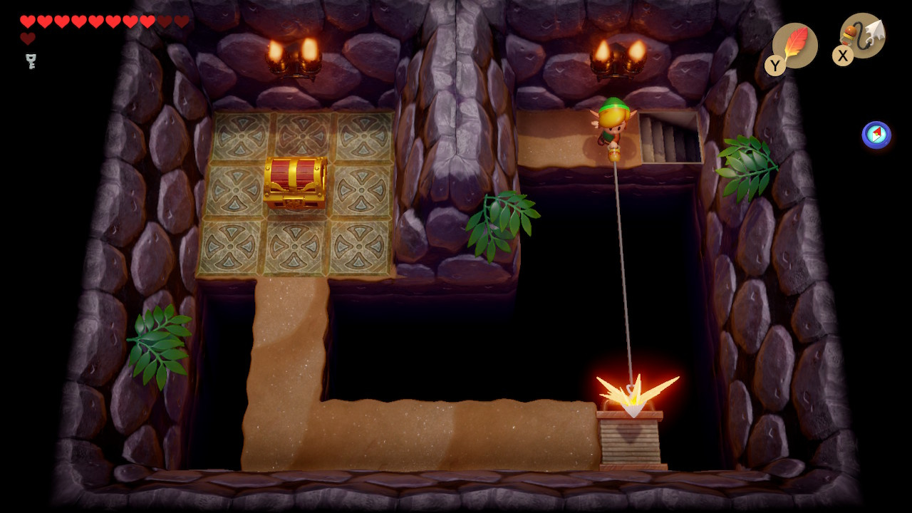
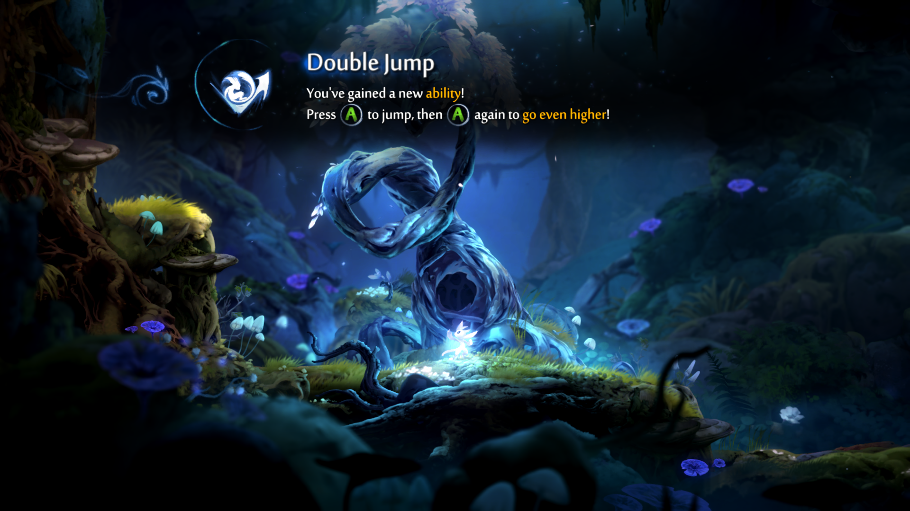

Week 2.1 — Keys and Doors
The Keys, the Doors, and All Those Problems — doing things that let you do other things.
This session opens with peer playtests of the previous week’s Lost Woods projects, then moves into the lecture proper: a survey of how games use key-and-door obstacles, from the literal to the abstract, and how that maps onto the broader design question of teaching the player how to play the game.
Playtesting — Lost Woods
Peer feedback session on the previous assignment.
Follow this link and fill out the form for each project you test: http://bit.ly/4g8fZri
QR code to the feedback form.
Instructor notes
Use found assets but adjust them — the one we provided or one that they find. Make it feel more tuned, less generic. Add ability to pick up.
Keys and Doors
Raph Koster’s A Theory of Fun posits that “fun” describes a certain kind of learning that humans have evolved to be good at and feel rewarded for engaging in.
Specifically, fun refers to a practice of pattern recognition. Being able to look at a situation and predict the outcome of a certain action or configuration of elements is a survival trait.
According to this framework, all games are fundamentally about teaching the player how to play the game.

Raph Koster, A Theory of Fun for Game Design.The Talos Principle — one key, many doors
The Talos Principle (2014).
What The Talos Principle teaches its player is a variation of keys and doors — albeit an unusual one, where the same key is able to open several different kinds of doors.
Instructor notes
Look at first two areas, through about 2:30. What is the game teaching the player? How? What does the player understand about the game at any particular moment? In this section, one kind of key opens three kinds of doors.
But key-and-door obstacles are an extremely common design feature in games of all kinds.
Literal keys, literal doors

Pokemon Red/Blue (1996).Instructor notes
Card key to get through this door — simplest possible.

Doom (1993).
GoldenEye 007 (1997).Instructor notes
These just tell you what you need to progress.
Keys that aren’t keys, doors that aren’t doors
Key-and-door puzzles don’t always feature literal keys and doors. Many implementations of this design involve other kinds of obstacles that impede progress and can be bypassed by finding or activating another game object.
Sometimes this is as simple as finding a button or a switch, rather than a key. Sometimes it can be more sophisticated and interwoven with plot or mechanics.

Portal (2007).Narrative-embedded keys — The Last of Us

The Last of Us (2013) — getting through a door with a powered lock. Find a generator to turn on the electricity to make the door open. Uses narrative setting.
The Last of Us (2013) — find a dumpster to push into a location to jump high enough.When the key is an ability
Sometimes the “key” isn’t an object in the world at all — it’s a new capability the player has gained.

Link’s Awakening (1993/2019).Instructor notes
Player gains ability: quasi-grappling hook, pulls bridge across.

Ori and the Blind Forest (2015).Instructor notes
Double jump.
Reading — Locked doors, headaches, and intellectual need
The aspirin metaphor from Max Kreminski’s essay.
Your reading for today, Locked doors, headaches, and intellectual need, describes “problem-solution ordering issues.” This is a complication with learning and communication that has specific relevance to key-and-door obstacles (and uses aspirin salesmanship as a metaphor).
Consider this reading carefully as you think about your next project.
Assignment
W03-Assignment - Sequencing Project